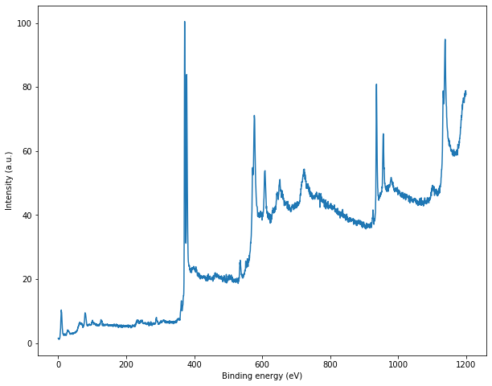
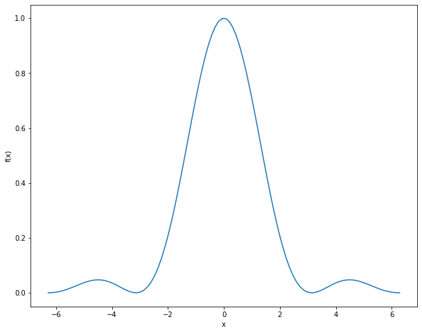

File read and write
Being able to read data from files and write the data generated by your program is an essential part of programming.
Here we will open a file called xps-data.txt which is stored in our current directory. You can obtain the same data file from my GitHub (check inside the Notebooks) and put it in your current directory. In case, you want to open file from another directory, you just need to provide the absolute or relative path of the file instead of just file name.
Our data file contains two columns of numbers; energy and intensity. We can read/extract the data following way:
# create two lists to store our energy and intensity values
energy = []
intensity = []
fid = open('xps-data.txt', 'r');
# read one line at a time
data = fid.readlines();
fid.close();
# number of lines we have
lines = len(data);
for lines in range(lines):
data_row = data[lines];
# remove the last newline character from each line
data_row = data_row[:-1];
# split in the tab character to separate energy and intensity strings
data_row = data_row.split('\t')
# store them in our energy and intensity variables as float
energy.append(float(data_row[0]));
intensity.append(float(data_row[1]));
Now that our data is stored in the energy and intensity variables, we can check them by index:
>>> energy[0]
1200.0
>>> intensity[5]
78.8658
But the best way to visualize our data is to make a plot. We will use matplotlib to do that:
import matplotlib.pyplot as plt
%matplotlib inline
plt.figure(figsize = (10, 8))
plt.plot(energy, intensity)
plt.xlabel('Kinetic energy (eV)')
plt.ylabel('Intensity (a.u.)')
plt.show()

Now that we are able to read data from a file, and use in our program, let us try to generate and save some data.
import numpy as np
x = np.linspace(-2*np.pi, 2*np.pi, num = 100);
y = (np.sin(x)/x)**2;
plt.figure(figsize = (10, 8))
plt.plot(x, y)
plt.xlabel('x')
plt.ylabel('f(x)')
plt.show()

We can save the data as follows:
fid = open('data.txt', 'w');
for index in range(len(x)):
fid.write('{0}\t{1}\n'.format(x[index], y[index]));
fid.close();
We have stored our data in a file named data.txt.